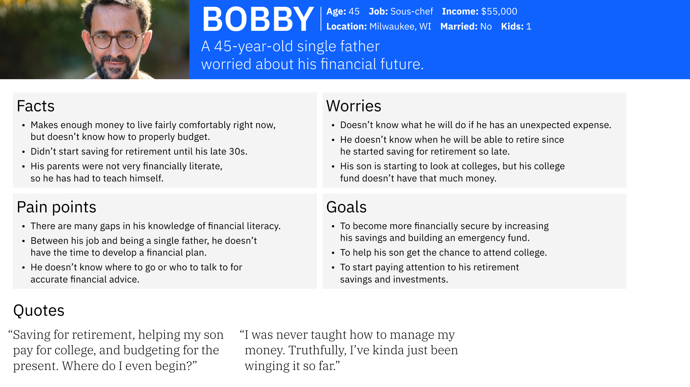
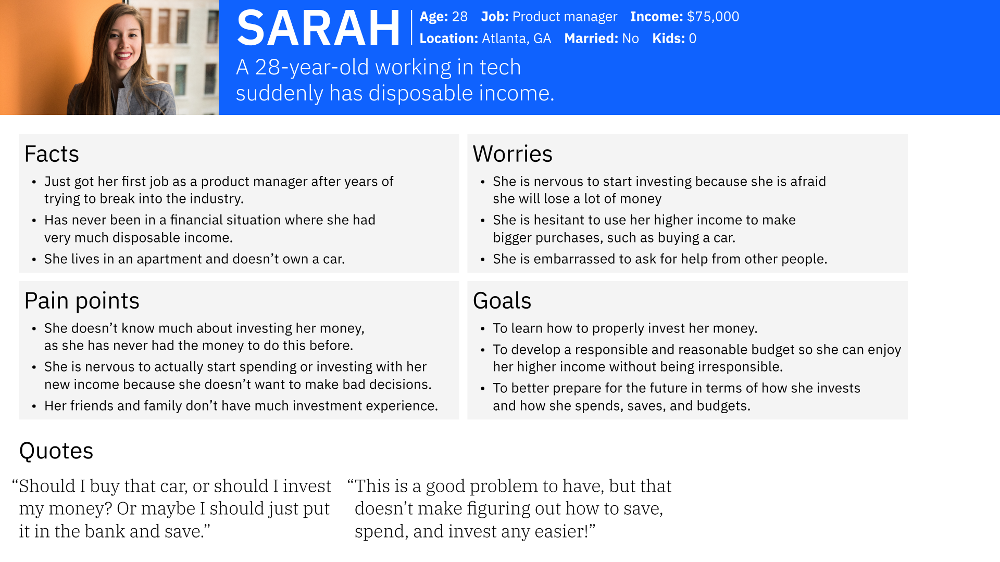
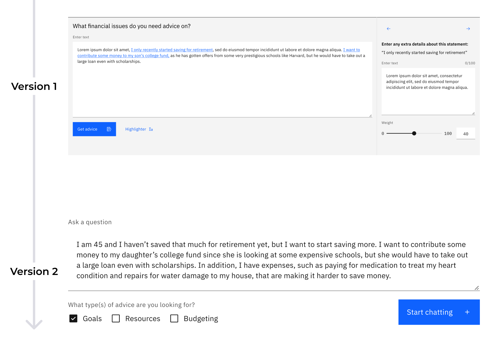
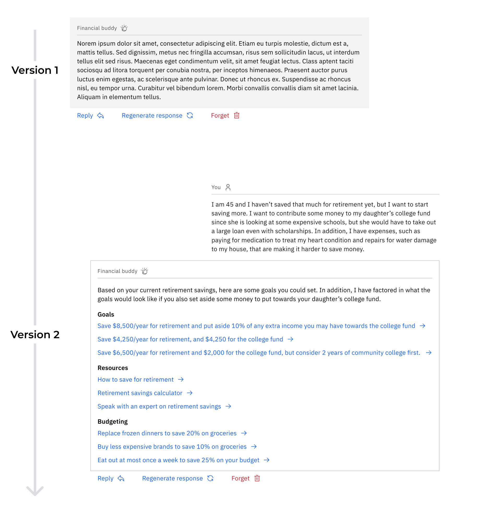
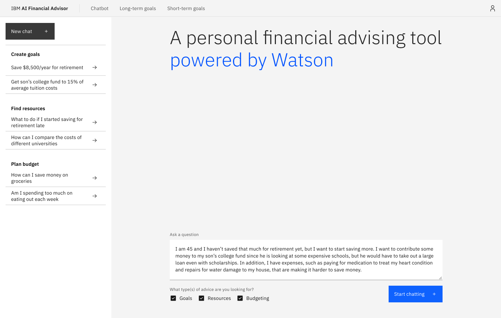
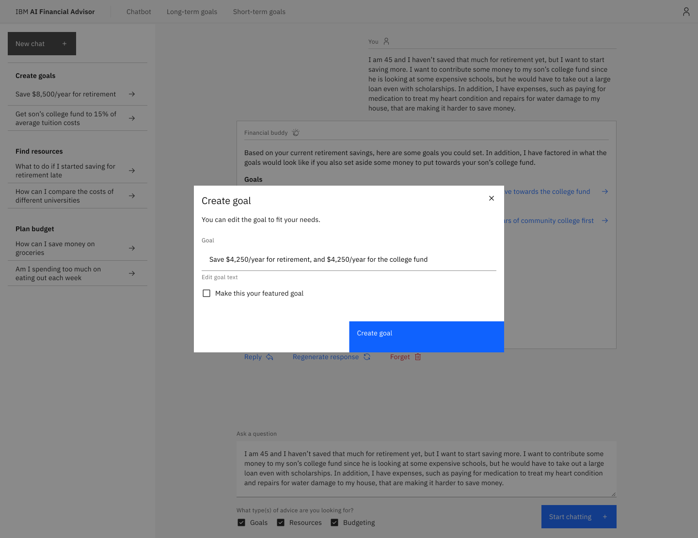
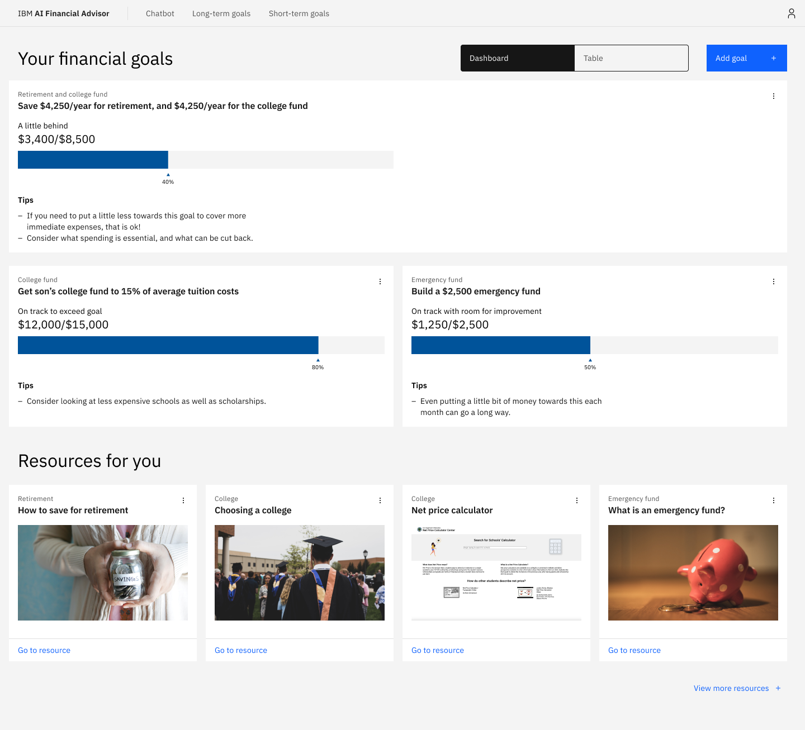

Ideating a tool to give AI-powered financial advice
During my IBM internship, I sat in on a workshop with a major financial institution that wanted to explore IBM's generative AI solutions. Many problems and ideas were shared, but one in particular stood out to me: how could generative AI help people who have questions about complex and personal financial situations?
Skip to final designsResearch
Talking to an expert
I talked to an expert on the banking industry and did secondary research to understand the user groups along with the problems they have. He said there are four main groups of users but emphasized that there are two groups of people who face the biggest challenges:


Researching how people approach financial advice
Because this wasn't an official client project, I wasn't given any resources to help me in conducting user research, but that didn't stop me from doing desk research to understand the user groups and potential challenges that they face.
Retirement planning is overwhelming for many
37% of adults surveyed said they have not done any retirement planning, and 76% of that group says that they find planning for retirement overwhelming. A trusted, accessible source of financial information could help this group start to make a plan.
Many young adults turn to social media
One article said that 47% of young adult respondents use Reddit for financial information and advice. This stood out to me because users looking for personal financial advice might appreciate the ability to stay anonymous while fostering personal connections.
Designing and iterating
Focusing on user problems
Using the information I learned about the potential users and the financial advising and banking industries, I created some statements to help me focus and solve user problems.
How might we…
design a chatbot experience that goes beyond general responses and gives helpful and personalized answers.
How might we…
have a non-judgmental experience for users revealing information that they would otherwise be embarrassed to admit.
How might we…
keep the user engaged in the process of reaching their financial goals for an extended period of time.
Iterations
Helping a user put their financial situation into words
Version 1
To help the user to get the personalized answers they are looking for, I designed a feature that allows them to assign an importance level to specific parts of their question for the AI to focus on.
Version 2
I realized that people might have trouble explicitly quantifying the importance of parts of their question, so I redesigned the prompt field. Keeping in mind the goal of allowing users to get personalized answers, I used checkboxes with preset options that still gives the chatbot focused context.

Giving useful and actionable information
Version 1
My first version of the chatbot answer was similar to what other chatbots look like. But then I thought back to how to achieve the unique value proposition of giving personalized financial advice while also directing users to relevant bank services.
Version 2
Instead of having the chatbot return a paragraph of text like existing chatbots already do, I decided to split the response up into three categories, helping the user easily understand the information. This also provides an opportunity to direct the user towards bank services that they might not know about.

Final designs




Lessons learned
Think about the user and business value
A mentor encouraged me to consider not only the user value, but also the business value. I started to think about this project in terms of how improving the financial planning experience of a bank's account holders will ultimately help the bank build customer loyalty and promote bank services.
Work within a design system
By using IBM's design system, Carbon, for this project, I learned best practices for designing experiences using an existing design system. At first, I tended to detach components a lot, which is not the best practice. As the project went on, I learned the importance of using the existing components properly in order to make the design and eventual development process smoother, faster, and more consistent.
More projects
Designing a tool to help students and professionals find government data while maintaining good data practices

Redesigning a student news website with a focus on creating a modular layout

Helping designers learn web development through the process of building their personal portfolio site

Ideating a tool to give people AI-powered financial advice as team leader of an internal hackathon project